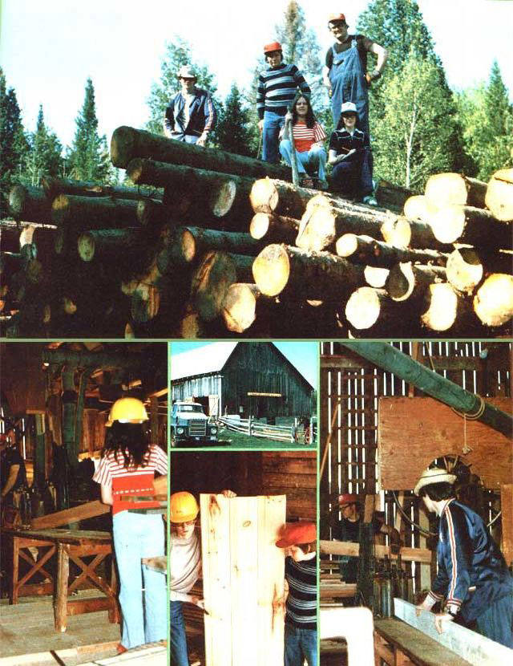

As former beef rancher Don Wright discovered, there's more than one way to make a farm pay!
Way back in 1971 (when MOTHER was still a mere girl), our family escaped the clutches of city pollution in all its varied forms and fell in love with the scrubbed-clean air of rural Haliburton County, Ontario.
For us (my wife Mary, sons Dave and Mike, and daughters Dawn-Liane and Karen) time really began that year, as we happily took up the chores and routines of caring for our chickens, a gelding, a Jersey cow, and a pair of Yorkshire-Hampshire sows and their piglets. However, our cash crop was cattle, and-by the fall of 1976-we had increased our herd to 20 head. Then-to our dismay-beef prices plummeted ... expenses soared. . . and our spirits sagged.
What to do? Sell out, of course: A two-year-old steer simply won't wait for market prices to improve. Instead, his appetite for hay and grain marches onward ... to the tune of big-dollar feed bills and small weight gains. Nevertheless, it's just about impossible to tend living creatures without becoming attached to 'em, and we watched the cattle buyer's departure with a numbing sense of guilt, shock, and dismay . . . but-as happens to many other folks who strive to live independently in a natural setting-circumstances (in our case the dropping beef prices) demanded that we "buck up" and reconsider the uses we'd been making of our resources.
It was then that we decided to convert our sturdy, empty barn (45' X 51') to house a new lumber milling operation. It would have cost $25,000 to $30,000 to erect a comparable structure . . . but the conversion-which involved removing the hay and stabling pens, installing additional posts for support, and thickening the upper floor with two-inch tamarack lumber sheathing-only required about 70 man-hours of labor.
Before rushing into the venture, however, we consulted the zoning bylaws to make certain the regulations that covered our land and buildings would permit the establishment of a lumber processing business. Much to our delight, the local council gave us consent in writing. Equally important, however, was the verbal approval we sought from our nearest neighbors. When a green-light situation seemed to prevail at every turn, we felt encouraged enough to go shopping for machinery.
Since labor costs had been a major factor contributing to the demise of many medium-to-small (eight to ten workers) mills, we reasoned that-despite the considerable expense of occasional equipment repairs-a small family operation that used large-scale machinery and had a good location would always have enough work to keep busy . . . and should manage a reasonable return on the investment.
As it turned out, we were able-by word-of-mouth-to locate all the necessary equipment . . . within a 20-mile radius of our home and at good prices! We obtained, for example, a fairly full and compatible milling setup that was underused by a firm which had shifted its operation to retailing. The $5,000 price tag covered the power unit (a UD-14 International Diesel), planing mill, resaw mill, ripping mill, and a complete line of accessories . . . including knives, band and rip saws, a line shaft, bearing mounts, belts, pulleys, a blower, a belting and lacing tool, small motors and grinders, exhaust piping, etc.
Further inquiries led us to a bargain forklift ($2,500) and gravel truck ($1,500), the latter of which we lengthened to accommodate loads of long lumber. Our mill equipment cost us a grand total of $9,000.
Of course, even after we'd cleaned out the barn and purchased the necessary machinery, a fair amount of work remained before we could open for business. For example, since the planer mill was extremely heavy (an estimated 12 tons), the barn floor had to be braced with a row of additional support posts. And-prior to unloading any heavy equipment-we had to take great care to decide the best traffic pattern for material handling within the limitations of the existing structure.
Using pipe, rollers, jacks, chains, and a "puller", we installed the machines. During the following weeks, the line shaft was leveled and lagged down . . . pulleys were lined "plumb" and true to the shaft . . . and protective railings were placed in potentially dangerous locations. The exhaust piping (12" diameter) and blower were connected to all three mills and vented to the field at the northeast corner of the barn.
Then, once again, we discovered that word-of-mouth recommendations are indeed powerful . . . because-even before the machines were in operation-the phone started ringing with requests for custom planing and resawing. Though many of these early orders were fairly small (often under 1,000 board feet), one person usually referred another to us ... and customers who came for one item often purchased much more than they'd planned to.
In fact, the need for our service was so strong that our 10,000 board feet of white pine, spruce, and eastern cedar (which we'd purchased in the rough for resale) wasn't even processed until well on in the season.
Better yet, dollars and busy -ness aside, we found that we enjoyed dealing with our customers. The do-it-yourself types who come to the "farm" (we still think of it that way) are, without exception, interesting people. Every one of them has plans for his or her material: studs, joists, rafters, sheathing, floors, wall paneling, siding, cabinets, furniture . . . the list is nearly endless. Some folks come simply to haul away the clean planer shavings for pet and livestock bedding . . . and every person is a pleasure to have on the property.
A typical work day comprises five to six hours of actual milling and one to three hours of sharpening, repairs, material movement, and other maintenance chores. And-since the mill is very much a labor of love-we often put in additional hours of planning and construction activity.
Altogether, our start-up investment in machinery and lumber, plus part-time "hired" labor, hovers close to $15,000, and-though we were in operation, during our first year, for only five months out of a nine-month season-we recorded 52 business transactions for a value of about $4,000. At the beginning of our second season, however, we already had a waiting list of four weeks of custom work. At that rate, we plan to recover the dollar portion of our investment-after costs and wages-by the end of the third or fourth year.
There are other rewards, too ... including the learning that comes from working as a team: During tough times, our family really pulled together. And lumber-unlike the two-year-old steer that wouldn't wait for sale and consumption-is always ready and never grows old or tough, gets sick, or requires dally care. (As a personal bonus, Mary prefers the fragrance of wood to the heavier odors of a cow barn.)
This winter, while the machines are temporarily idle, we're busy constructing bins to organize the spring run of house molding . . . and our need to grow and learn is now directed toward offering a more complete line of products. (Since excellent basswood is available in the area, picture frames, liners, and stretchers-made of this valued wood-could become our specialty.) In any event, we're determined to avoid the tedious repetition of labor common in the majority of manufacturing shops.
It seems important to point out that lumber processing is only one of many possible applications of recycling privately owned resources (such as a barn and land), and-as we haven't copied anyone else's experience-we don't advise others to copy ours, necessarily. We simply wanted to share the details of our enterprise in the hope that you, too, can use initiative to redirect your particular "resources" when necessary.
Meanwhile, if you're in our area, drop in at the "mill-farm" near Lochlin, Ontario. (You'll be able to hear the song of my saw some distance away.) Our visitors seem to enjoy the smell and touch of new lumber products- and the excitement of watching steel shape wood-almost as much as we do!
|
 ABOVE: Though ?wood-in-the-rough? was on hand to process for resale, orders for custom planning and resawing kept the Wright family busy for weeks. BOTTOM LEFT: The Wright women find they prefer the sweet scent of pine, spruce, and cedar to the farm?s former aroma of cow. CENTER: After the animals were sold, the empty barn was a sad, lonely place? but not anymore! BOTTOM CENTER: Learning about the lumber business in an exciting, new challenge for the Wrights? children. BOTTOM RIGHT: Equipment and customers were found through the best form of advertising: word-of-mouth. |
|
|